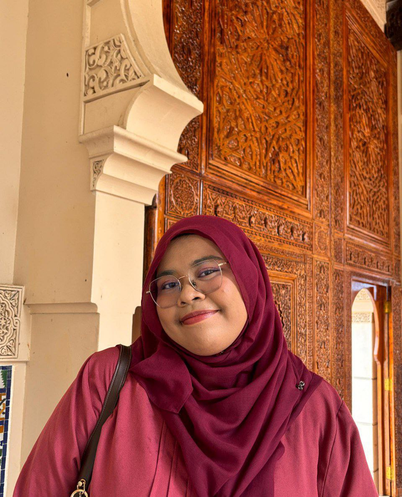

Information Management student triumph to coding
My name is Nurul Afiqah binti Nafzman! I was born on 13th of October. This is my first time trying coding and oh my god! it's so fun. One of my passion is learning. I truly enjoys learning whether it is from books, people or daily life. I've always been curious about how things work. The same curiosity has led me to study Library Management, where I get to explore how information is organised and shared.
What I love even more than learning is to help other learn too. Whether it's explaining how flat structure in the subject MGT400- Introduction to Management to explaining about how to build a character in the renowned game 'Genshin Impact', I find real joy in making things clearer and more accessible.
"With Hardships, Comes Ease"
A piece of ayat from the Quran from surah As-Syaurah that I held close to my heart and mind. A beautiful reminder that no matter how much hardships I went through, there will be Him shining His light upon me, guiding me back and taking care of me. A beautiful yet concise sentence to shows the mercy of Allah s.w.t
Not only that this ayat helped me go through hardships but it also implemented seed of determination, preservation and hopefulness in my heart.